01. Problem Statement
What exactly was our prompt?
For photographers, finding the perfect location can be just as important as gathering the equipment. Yet, discovering unique, hidden, or niche photography spots can be time-consuming and difficult.
For that reason, we asked…
How might we design an app that can make discovering unique photo spots and sharing hidden gems effortless for photographers?
02. Research
Competitive Analysis
Where are photographers already looking?
Our research began by first conducting a competitive analysis. Each member was tasked to look at one of four photo-sharing platforms which include VSCO, Flicker, Pinterest, and Instagram to better understand their pros and cons.
Image-driven app curated for each user
Low-user generated originality
Flicker
High Quality photo sharing
Limited playfulness
VSCO
Aesthetically pleasing content that's curated
Weak social interaction
Most popular method of sharing photos
High pressure to perform
My competitive analysis on Pinterest (FigJam)
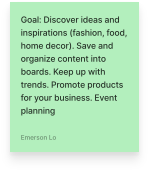
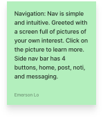
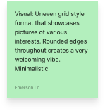
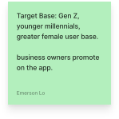
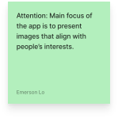
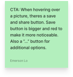
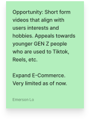
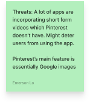
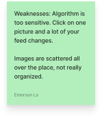
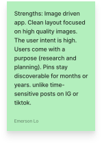
Competitive Analysis Results
So… what does each platform have to offer?
Every successful product has one standout feature. Pinterest curates, Flickr protects quality, VSCO sets a mood, and Instagram brings the audience, yet none of them helps you find the place where a great photo happens. With so many photo apps, ours needed one too, but what would set us apart? That question carried us from research into ideation.
User Surveys / Results
Spontaneity beats planning
To understand how people discover photo spots, we surveyed 50+ individuals aged 18–25 about their inspiration sources, equipment, and sharing habits. You can check out our survey by clicking here!
67% discover photo spots spontaneously, and only 20% plan ahead.
73% explore in person rather than through social media. Key insight: spontaneous, real-world discovery feels more exciting than searching online.
- Spontaneous67%
- Planned20%
- Other13%
How important is location to you when taking photos? *
How do you prefer to find photo spots? *
I prefer to plan and find photo spots ahead of time
I prefer to explore and find spots spontaneously
I don’t usually look for photo spots
Do you usually share the locations of your favorite photo spots with others? *
Yes, I always share location info
I share sometimes, depending on the spot
I only share with close friends or other photographers I trust
No, I prefer to keep my favorite spots private
It depends on how popular or fragile the location is
Photo Spots Survey
Hello! We’re a team of designers hoping to gain insight on how photographers engage in their craft and the digital platforms that facilitate them, with the goal of designing an application for photographers.
This survey is for all skill levels of photographers!
It should take less than 5 minutes to complete. Thank you for your time and input!
* Indicates required question
Email *
Record erlo@ucdavis.edu as the email to be included with my response
What is your age? *
Under 18
18-25 years
26-39 years
40-64 years
User Interviews / Results
Three themes were consistent
To better understand common preferences and specific pain points in modern photo apps, we interviewed 10 UC Davis students (1 professional). Using an affinity map, we synthesized the findings and discovered three key problem areas that would guide us later in ideation.
Gatekeeping
Many keep favorite spots secret, fearing they'll lose their uniqueness.
Spontaneity
Best photos happen in the moment, without overthinking.
Casual Sharing
Sharing should feel casual, without pressure to be perfect.
03. Synthesis & Ideation
Mobile vs. Desktop
Why mobile won
The first big call was mobile or desktop. Research showed people prefer spontaneous, in-person discovery, which is exactly where mobile shines. Desktop is better for big screens and editing, but mobile lets photographers explore, shoot, and share in the moment.
Mobile
- Push notifications
- Works offline
- Built for spontaneity
- Best for casual users
Desktop
- Can’t shoot on the go
- Suits polished, pro uploads
- More ways to monetize
Looking back at our research
Laying out the journey
To turn our research into actionable designs, I went back through the main pain points from users. From there I began brainstorming solutions, mapping the overall workflow and experience through information architectures and user flows.
Information Architecture
Click any screen to take a closer look.
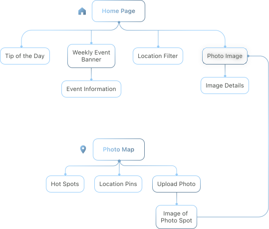
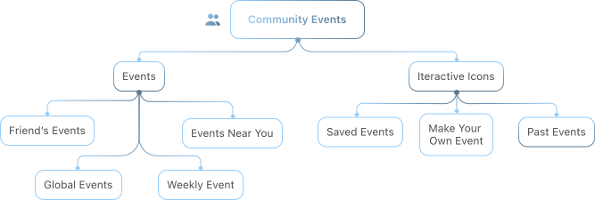
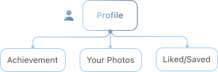
User Flow
Click any screen to take a closer look.
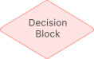
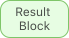
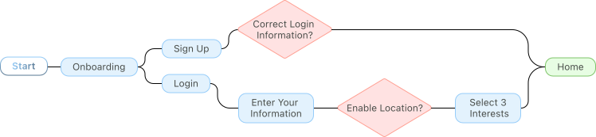
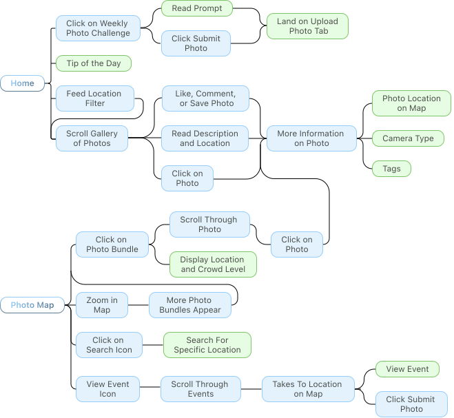
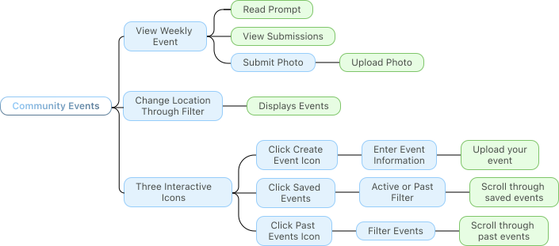
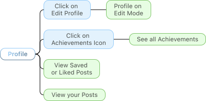
Lo-fi Sketches
Concepts start to take shape
Lo-fi sketches let me explore ideas quickly before committing to wireframes, turning research insights into tangible layouts and workflows. Each designer took two pages; mine were the home page, which I iterated twice, and the events page.
- LeftMy iterations
- RightThe team’s work
Click any sketch to take a closer look.
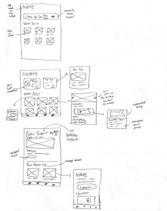
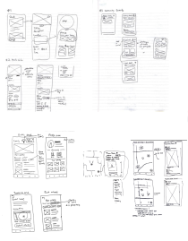
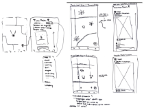
04. Mid-Fi Prototyping & Usability Testing
My Pages, Iterated
The app coming to life
After everyone explored wireframes across every key page and we settled on one consistent design, I took ownership of the home and community events pages, working through many layouts to sharpen intuitive visual interactions and a clear information and visual hierarchy.
Home Page
Click any screen to take a closer look.
Initial iterations
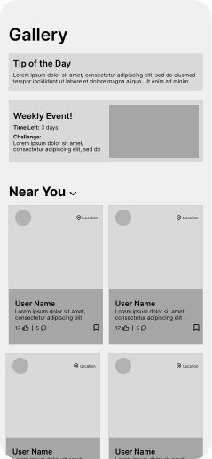
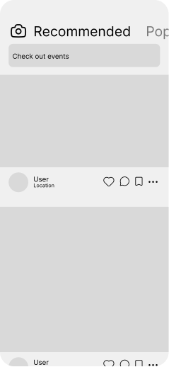
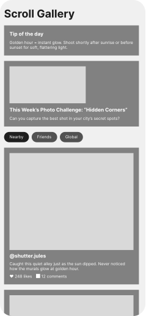
Feature design preferences
A visible countdown
.01’s photo challenge banner won out because it shows the time left, which users found crucial.
Photos that fill the screen
Users favored .02’s image layout for its large, high-quality photos.
Filters at a glance
Users preferred .03’s filter chips; .01’s dropdown felt tedious and .02’s horizontal scroll unnatural.
Final iteration
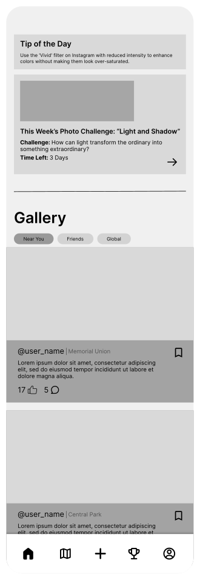
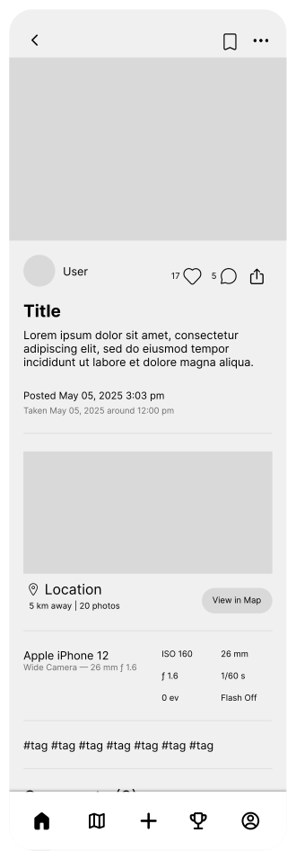
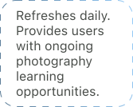
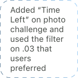
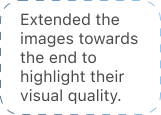
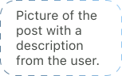
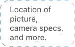
Community Events
Click any screen to take a closer look.
Initial iterations
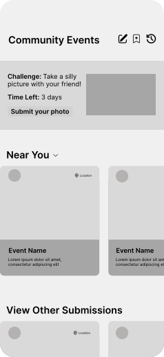
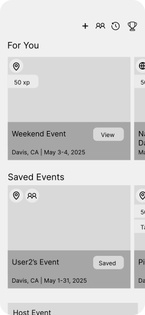
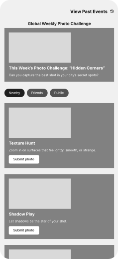
Feature design preferences
Challenges front and center
Photo challenge banners from .01 and .03 were desired by users for easy accessibility.
A natural vertical scroll
Photo and information card layouts from .03 were preferred for their natural vertical scroll.
Telling the pages apart
Users expressed concern with differentiating between the home and community events pages.
Final iteration
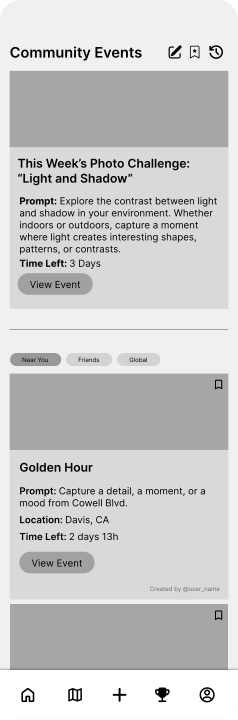
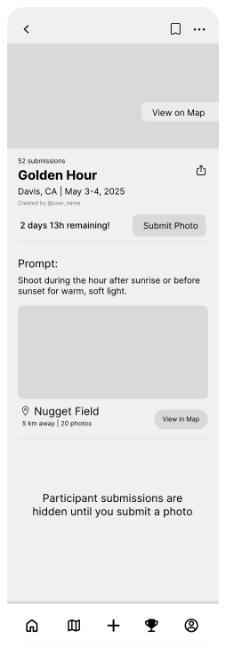
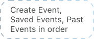
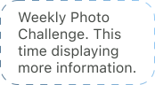
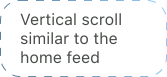
The rest of the app
My teammates led these pages. They’re here so you can see the full app.Click any screen to take a closer look.
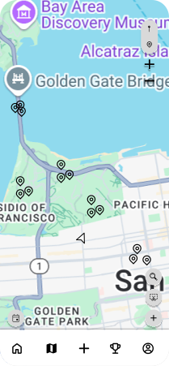
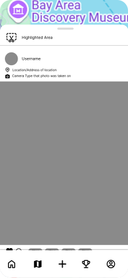
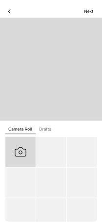
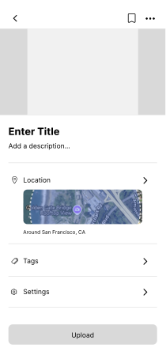
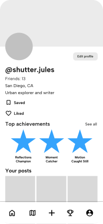
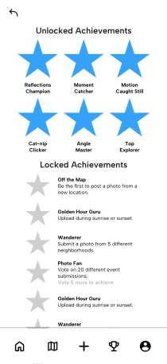
Usability Testing
What do the streets think?
After the mid-fi prototypes, we ran 2 rounds of usability testing with 8 UC Davis students. Each round surfaced friction points in our flows, and those findings drove every change from my initial iterations to the final home and community events pages.
Home
Features felt natural and easy to reach, but users couldn’t tell home and events apart.
Community Events
The banner, trophy icon and saved events all led somewhere users didn’t expect.
Upload
Submitting to an event made users pick the same event twice.
Photo Map
Too many unlabeled icons and pins. Users found features by trial and error, and +/− zoom felt unnecessary on a phone.
Profile
Achievements were unclear; asked to edit them, users wandered across pages.
05. Hi-Fi Prototyping
Design System
Final touches to the UI
To keep every page consistent, we built a design system that standardized typography, color and components. Albert Sans keeps text clean and easy to read. We kept the palette to a small set of colors on purpose, so the photos people post, and their visual quality, stay the focus.
Click any screen to take a closer look.
Typography
Color
Reusable components kept the team in sync: a five-tab nav bar (home, map, upload, events, profile), page headers with back and save actions, filter chips for Near You, Friends and Global, Active / Past toggles, and one set of icons and buttons. I built my high-fidelity screens on this foundation for a polished experience.
Components